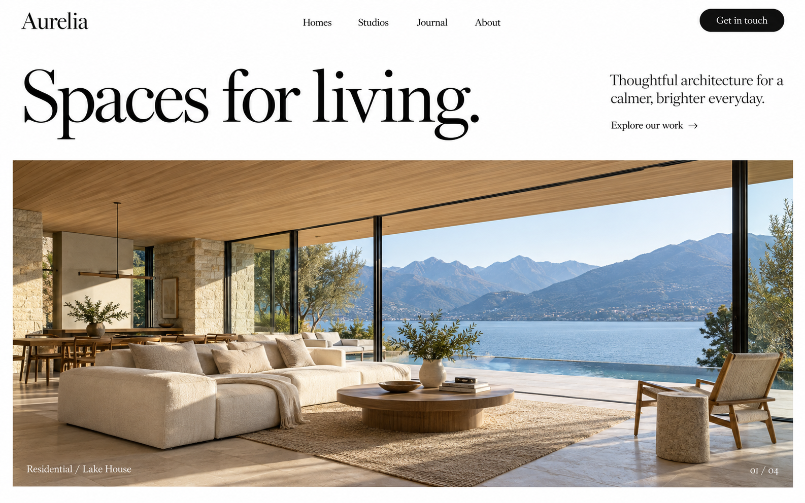

Spaces Shaped by Light, Silence, and Geologic Solitude

Project 08 — Lake Lucerne Pavilion, Vitznau
Reinforced Concrete, Alpine Limestone, Hand-Rubbed Glass
Studio Thesis
We craft structures that age into the landscape, not against it.
Founded in Zurich and Kyoto, Aurelia approaches architecture as a slow geologic intervention. Every project balances thermal mass, deep shadow, and native mineral textures to build shelter that outlives architectural fashion.
32
Completed Monoliths
14
Design Honors
100%
Passive Mass Mass
Selected Works
Recent Completions · 2023–2026
Kyoto Forest Residence
Engadin Stone Pavilion
Materiality & Origin
Geological Palette
Andeer Green Gneiss
Quarried directly in the Rhenish valleys, sliced along natural cleavage planes to expose quartz veins and mica crystals.
Poured Hydraulic Lime
Low-carbon binder formulated with local aggregate, allowing the structure to breathe and self-heal hairline fractures across decades.
Charred Mountain Larch
Treated with ancestral flame-sealing methods, creating a velvet-black surface completely resistant to rot, insects, and sub-zero freezes.
Acoustic Wool Felt
Raw undyed sheep fleece pressed in Appenzell, dampening room echoes and tempering alpine humidity naturally.
Aurelia Studio Monograph IV
MATTER &
SILENCE
Park Books Zurich · 380 Pages
SILENCE
New Release
"A quiet masterclass in European architectural restraint. Aurelia reminds us why stone still matters in a digital era."
Featuring 180 medium-format photographs, full construction blueprints, and essays by Juhani Pallasmaa and Kengo Kuma.
Order Monograph Volume IV